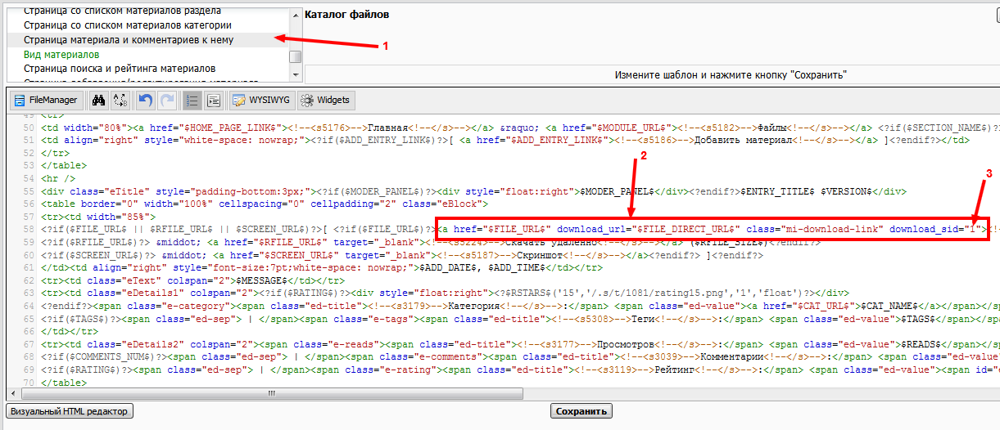

В списке страниц выберите "Страница материала и комментариев к нему" (1), в области редактирования замените текст (2)
<a href="$FILE_URL$">
на
<a href="$FILE_URL$" download_url="$FILE_DIRECT_URL$" class="mi-download-link" download_sid="1">
Обратите внимение что в качестве значения атрибута download_sid необходимо ввести ваш ид в партнерсокй программе MoneyInst (3).

Если вы хотите что б имя файла соответствовало названию материала добавьте в ссылку следующий атрибут: download_name="$ENTRY_TITLE$"